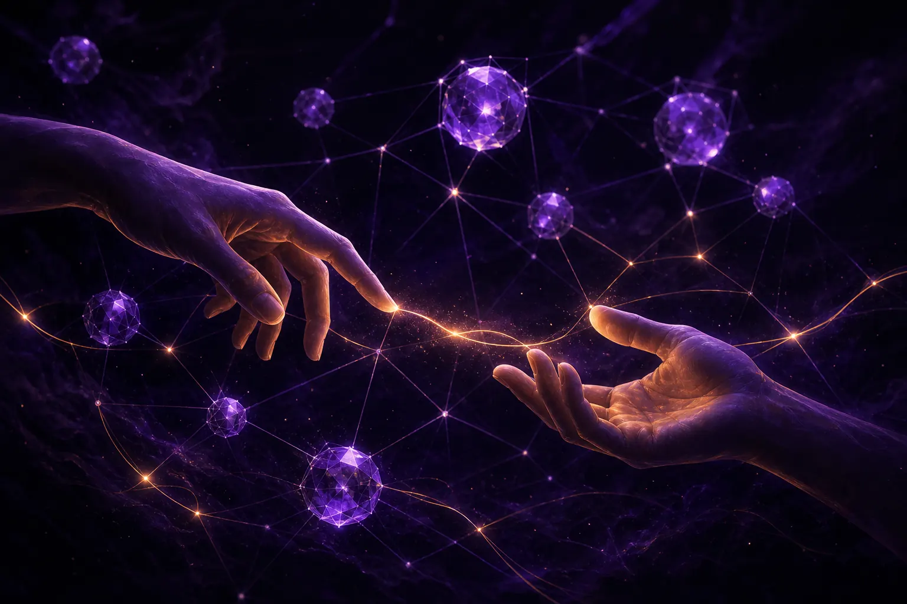

자동화된 마케팅에서 인간적 연결 지키기

자동화된 마케팅에서 인간적 연결을 지키려면, 실제 사람이 관여해야 하는 순간을 미리 정하고, 고객이 자동화와 상대하고 있을 때 이를 분명히 알리고, 자동화된 메시지를 오디언스가 실제로 하는 말에 기반하게 하고, 효율이 신뢰를 해칠 때 이를 뒤집을 권한을 지정된 사람에게 주십시오. 자동화는 연결을 대체하는 것이 아니라 연결을 위한 시간을 만들어야 합니다.
자동화는 왜 연결을 약화시킵니까?
자동화된 메시지가 잘못 쓰여서가 아닙니다. 훌륭한 메시지도 많습니다. 약화는 쌓여 가는 작은 신호에서 옵니다. 숙고했다고 보기에는 너무 빨리 도착하는 답장, 조금 지나치게 많이 아는 개인화, 사람에게 닿는 출구가 없는 여정. 고객은 알아챕니다. AI와 마케팅에 관한 저희의 리스닝은 사람을 너무 잘 아는 브랜드에 대한 조용한 불신, 그리고 추적하기보다 귀 기울이는 것처럼 보이는 브랜드에 대한 선호를 계속 드러냅니다.
AgentC의 벽에 늘 걸어 두는 원칙이 있습니다. 윤리적인 기술에는 효율보다 인간다움을 우선하는 용기가 필요하다는 것입니다. 거창하게 들립니다. 실제로는 어떤 순간은 사람이 처리하기 때문에 비용이 더 든다는 것을 받아들이고, 그럴 가치가 있다고 결정하는 것을 뜻합니다.
어떤 마케팅 순간을 사람의 몫으로 남겨야 합니까?
저희는 짧은 테스트를 씁니다. 다음 중 하나라도 해당한다면 그 순간은 사람의 몫으로 남기거나, 적어도 사람에게 닿는 분명한 경로를 제공해야 합니다.
사람의 몫 테스트
- 고객이 화가 났거나, 슬픔에 잠겼거나, 두려워하거나, 당황한 상태입니다.
- 고객이 쉽게 되돌릴 수 없는 결정을 내리고 있습니다.
- 고객이 이미 한 번 자동화를 거쳤는데 도움이 되지 않았습니다.
- 메시지가 정체성, 건강, 돈 걱정, 가족에 관한 것입니다.
- 브랜드가 사과하고 있습니다.
그 밖의 모든 것은 다음 네 가지 규칙이 지켜진다면 에이전트에게 맡길 후보가 될 수 있습니다.
인간적인 자동화를 위한 다섯 가지 설계 규칙
1. 말하기 전에 들으십시오
가정에서 출발한 자동화 메시지는 공허하게 느껴집니다. 저희 메시지는 오디언스 리서치에서 시작합니다. AI 오디언스 리서치 플랫폼이자 저희 기술 파트너인 SOMIN이 실제 대화 속 톤, 감정, 긴장을 해독하므로, 에이전트는 사람들이 실제로 느끼는 것을 향해 글을 씁니다. SOMIN의 소셜 미디어 매니저는 같은 기반을 일상적인 게시에도 적용합니다.
2. 기계라는 사실에 정직하십시오
에이전트를 사람처럼 꾸미지 마십시오. 고객이 자동화된 어시스턴트와 대화하고 있다면 그렇다고 말하고, 사람에게 연결되는 방법도 알려 주십시오. 여기서의 정직은 비용은 적게 들고 얻는 것은 많습니다.
3. 프로필이 아니라 순간에 맞춰 개인화하십시오
누군가 방금 한 말에 반응하는 개인화는 세심하게 느껴집니다. 다른 곳에서 알게 된 정보를 드러내는 개인화는 감시처럼 느껴집니다. 앞의 것을 택하십시오.
4. 출구를 분명히 하십시오
모든 자동화된 여정에는 사람에게 닿는 눈에 보이는 경로가 있어야 합니다. 팀이 그 경로에 인력을 배치할 수 없다면, 그 여정은 팀이 감당하기에 너무 큰 것입니다.
5. 누군가에게 뒤집을 권한을 주십시오
자동화된 캠페인이 기술적으로는 성과를 내지만 인간적으로는 잘못되었을 때 이를 멈출 수 있는 사람을 지정하고, 그 사람이 그렇게 할 때 지지해 주십시오. 그것이 저희가 말하는 지휘자이며, 그 역할은 에이전틱 마케팅이란 무엇인가에서 설명합니다.
인간적인 자동화의 시험대는 고객이 기계를 알아차리느냐가 아닙니다. 고객이 기계에게 버려졌다고 느낀 적이 있느냐입니다.
인간적 연결은 성과를 해칩니까?
단기적으로, 좁은 지표에서는 그럴 때가 있습니다. 느린 사람의 답장은 즉각적인 자동 답장보다 비용이 더 듭니다. 민감하지만 전환율이 높은 앵글을 피하는 캠페인은 일주일간 성과가 떨어질 수 있습니다. 하지만 신뢰가 약해지는 비용은 느리게 나타나고 대시보드에서 보기 어렵습니다. 재구매 감소, 불만 증가, 다른 모두와 똑같이 들리는 브랜드.
마지막 요점이 중요합니다. 모든 브랜드가 비슷한 AI 도구를 쓰면, 사람처럼 들리는 것이 차별점이 됩니다. 저희 자매 컨설팅사 GPT3 Marketing은 브랜드 보이스 시스템과 사람의 편집을 통해 획일적인 AI의 천편일률에서 벗어나는 방법에 대해 폭넓게 글을 써 왔습니다.
실제 어카운트에서는 어떤 모습입니까?
구체적인 예를 들어 보겠습니다. 가족 중심 리테일러가 구매 후 메시지를 자동화하려 합니다. 에이전트가 감사 인사, 관리 팁, 리뷰 요청, 재구매 알림으로 이어지는 시퀀스를 작성합니다. 지휘자가 사람의 몫 테스트를 적용하다 빈틈을 발견합니다. 일부 구매는 병원에 있는 신생아를 위한 것입니다. 시퀀스를 변경해 특정 제품이 포함된 주문은 사람이 쓴 메모와 고객센터 직통 연결이 있는, 더 부드럽고 느린 경로로 보내도록 합니다.
이 변경은 첫 주에 성과 개선으로 드러나지 않습니다. 나중에, 그 고객들이 브랜드에 대해 이야기하는 방식에서 드러납니다. 이 카테고리의 브랜드가 AI 오디언스 인사이트를 어떻게 활용했는지 보고 싶으시다면 Mothercare Singapore 사례 연구를 읽어 볼 만합니다.
이 모든 가운데서 사람들은 어디에서 서로를 만납니까?
마케터 자신에게도 연결이 필요합니다. 저희 리서치에서 반복적으로 나타나는 모먼트 중 하나는, 자동화가 일을 바꾸는 가운데 서로 경험을 나눌 동료를 찾는 사람들입니다. 싱가포르의 Marketing Mondays 커뮤니티는 부분적으로 그 때문에 존재하며, 그 세션들은 마케팅이 여전히 사람의 비즈니스라는 점을 잘 일깨워 줍니다.
연결이 유지되고 있는지는 어떻게 측정합니까?
하나의 숫자로는 할 수 없지만 신호를 지켜볼 수는 있습니다. 고객이 얼마나 자주 사람과 이야기하고 싶다고 요청하는지, 얼마나 빨리 연결되는지 추적하십시오. 매주 자동화된 메시지에 대한 답장 샘플을 직접 읽으십시오. 불만 테마에서 "로봇 같다", "무시당했다", "소름 끼친다" 같은 단어를 살피십시오. 사람들이 공개적으로 브랜드에 대해 어떻게 이야기하는지 들으십시오. 리스닝 도구를 쓰면 따뜻함이 커지고 있는지 불만이 커지고 있는지 알 수 있습니다.
어느 것도 복잡하지 않습니다. 다만 누군가의 업무여야 하고, 그 사람에게는 신호가 바뀔 때 여정을 바꿀 권한이 있어야 합니다.
여정을 자동화하고 계시고 그 안에서 사람이 어디에 남아야 할지 다른 의견이 필요하시다면 ask@agentc.marketing으로 에이전트에게 브리핑해 주십시오. 사람이 답장해 드립니다.
자주 묻는 질문
자동화된 마케팅도 여전히 개인적으로 느껴질 수 있습니까?
네. 고객이 실제로 말하고 느끼는 것에 반응하고, 자동화라는 사실에 정직하며, 실제 사람에게 닿는 쉬운 경로를 항상 제공한다면 그렇습니다.
어떤 고객 순간은 절대 완전히 자동화해서는 안 됩니까?
고통스러운 상황, 되돌릴 수 없는 결정, 반복적으로 실패한 자동화, 건강이나 돈 같은 민감한 주제, 그리고 브랜드의 사과가 관련된 순간에는 사람이 관여하거나 즉시 사람을 연결해야 합니다.
AgentC는 자동화된 메시지를 어떻게 현실에 기반하게 합니까?
AgentC의 에이전트는 실제 대화 속 톤, 감정, 긴장을 해독하는 SOMIN 오디언스 리서치에서 출발하므로, 메시지가 사람들이 진정으로 느끼는 것을 다룹니다.
에이전트에게 브리핑하기
AgentC는 에이전틱 마케팅 에이전시입니다. 저희 에이전트는 24시간 리서치하고, 만들고, 최적화하며, 저희 전략가는 무엇이 중요한지, 무엇이 브랜드에 맞는지, 무엇은 절대 자동화하지 말아야 하는지 결정합니다.
ask@agentc.marketing으로 이메일 보내기 →